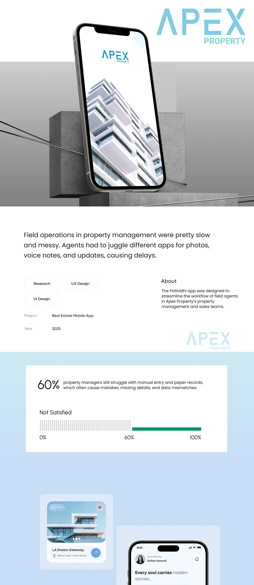
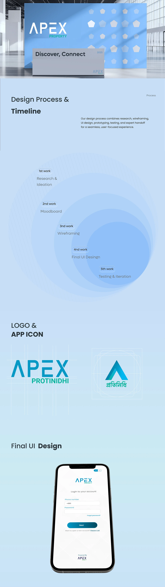
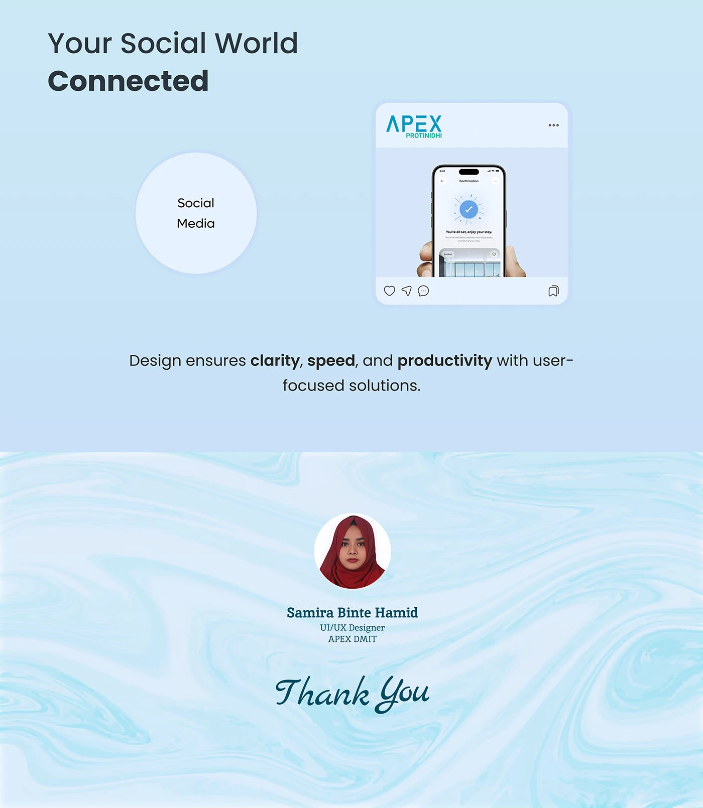

Proptech · Mobile app · Apex DMIT
Apex Protinidhi
A Bengali-first app for property field agents — leads, voice notes and earnings in one place, instead of four apps and a notebook.
- Role
- Research, UX design, UI design
- Year
- 2025, Apex DMIT
- Platform
- Mobile app
- Client
- Apex Property, Bangladesh
- Tools
- Figma, Photoshop
01The problem
Field operations were slow and messy. Agents juggled separate apps for photos, voice notes and updates, and the handoffs between them cost time on every visit.
Research put a number on the wider habit: 60% of property managers still work from manual entry and paper records, which is where the missing details and mismatched data come from.
02Who it is for
Not an office user. A field agent in Bangladesh, on a phone, between viewings — working in Bengali, paid on what they close, and usually with one hand free.
That decided the two things this app does differently from the desktop systems around it.
Two decisions that shaped it
-
Bengali first, not translated
The interface, the lead statuses, the amounts and the terms are all in Bengali, with the number pad defaulting to +880. English sits in the profile as a setting, not as the default the user has to escape from.
-
Voice as a first-class input
Recording is a primary action with its own screen, waveform and playback — not a note attachment. An agent standing in a property can talk instead of type, then send it straight to the record.
The process
-
Research & ideation
What agents actually carry, and where the current workflow drops things.
-
Moodboard
The visual direction, set against Apex Property's existing brand.
-
Wireframing
Structure before surface — what belongs on a screen held in one hand.
-
Final UI design
Logo, app icon and the full screen set, in Bengali throughout.
-
Testing & iteration
Then handoff, with the states and specs the build needed.




03Credit
Research, UX and UI at Apex DMIT for Apex Property. Published on Behance.
Apex admin panel
Media partners, leads and commission payments on one platform — the desk side of this product.
Say hello
Happy to walk through this project, or any of the others, on a call.